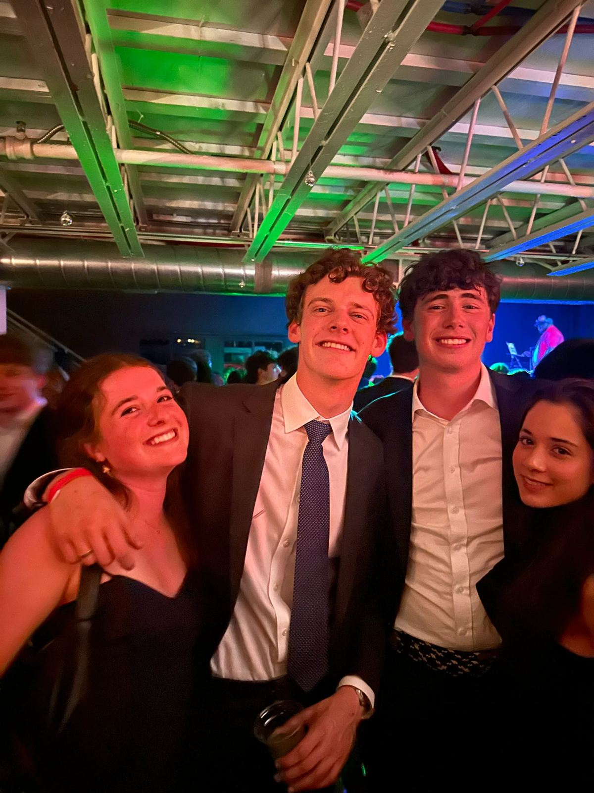
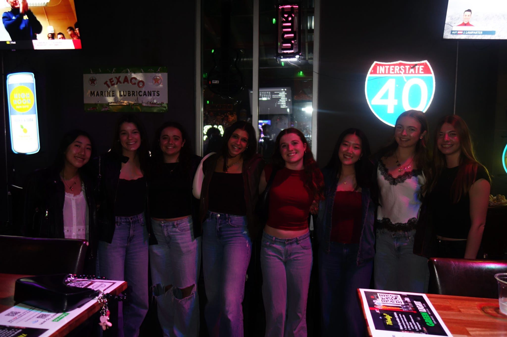
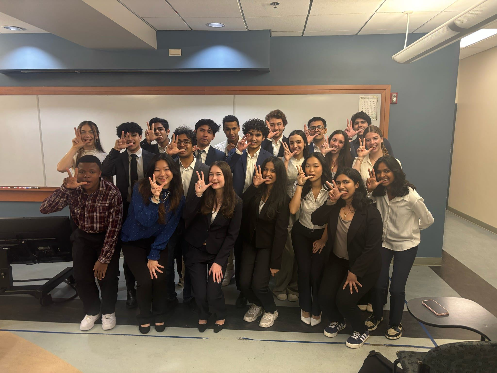
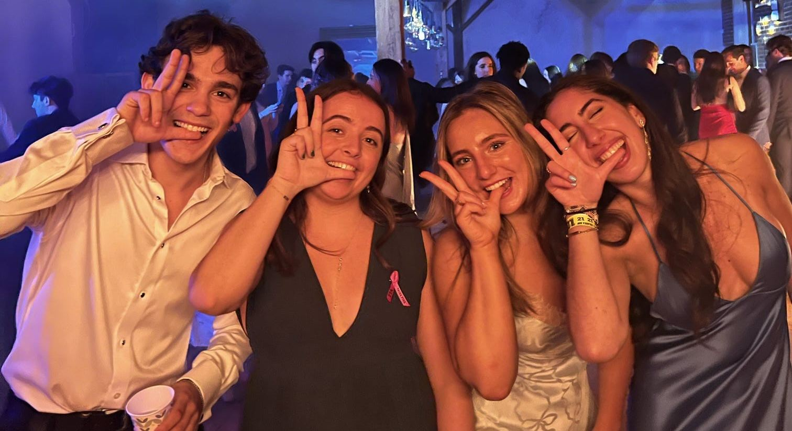

First Pre-Professional Technology Fraternity at Vanderbilt
Kappa Theta Pi is a co-ed, pre-professional fraternity for students who are passionate about technology, regardless of major. The Rho Chapter brings that to Vanderbilt: recruiting prep, technical workshops, project teams, an alumni network, and a brotherhood that shows up for each other.
Our brothers are computer scientists, engineers, data scientists, economists, and designers. What they share is an interest in building things and helping each other get where they want to go.

A Chapter That Shows Up
Brothers show up for each other: at hackathons, in recruiting season, and at every formal and retreat in between.

Get Involved
We recruit at the start of every fall and spring semester. Come to an info session, meet the brothers, and apply.

Get Ahead
Brothers and alumni have worked at OpenAI, Google, Goldman Sachs, Palantir, BCG, and more. Meet them.
Everything Else, in Three Places
Hackathons, Workshops, and the Resume Template
How the chapter gets brothers from application to offer.
OpenLife in the Chapter
Formals, retreats, socials, and the in-between.
Photos31 Chapters, Coast to Coast
Where Kappa Theta Pi is, and where the Rho Chapter fits in.
The map
Want to Learn More?
Questions about rush, the chapter, or partnering with us. We read everything.